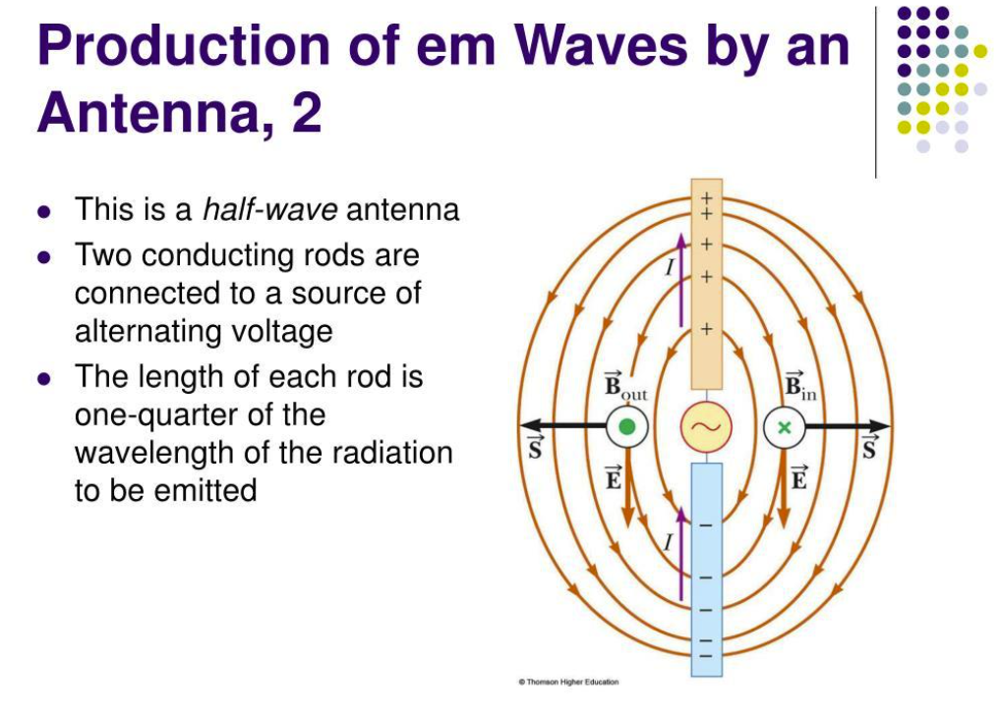

电场为什么能让材料响应：电极化
材料由原子、离子和电子组成。电场作用下，正负电荷会发生微小的相对位移。
可以想成：
没有电场：正负电荷的中心基本重合 施加电场：正负电荷的中心发生微小分离
许多这样的微小电偶极子合起来，形成电极化 P。
这里容易混淆两个“极化”：
| 名称 | 含义 |
|---|---|
| 光的偏振 | 光的电场朝什么方向振动 |
| 材料的电极化 P | 材料内部电荷如何被电场驱动 |
比如，项目使用x偏振泵浦，表示入射电场沿x方向振动；它会驱动MOF中的电荷，产生材料电极化。
随时间振荡的电极化能够成为辐射源。 倍频光就是由相应的倍频电极化源产生的。
“非线性”为什么会产生新频率
1. 线性响应
最简单的情况是：
电场加倍，材料电极化也加倍。
用一个简化关系表示：
如果电场以频率 振荡，电极化也以同一频率振荡。
2. 二阶非线性响应
某些材料还具有一个与电场平方有关的响应：
这是帮助理解的标量示意式；实际的 MOF 模型使用具有方向关系的张量。
为什么平方项能产生倍频？
假设电场为：
平方以后：
观察最后一项：
原来是 ，现在出现了 的振荡。
因此，材料产生了一个以两倍频率振荡的电极化源，它可以辐射二次谐波。
天线（Antenna）
天线是连接局域电磁振荡与向外传播的电磁波的结构。它既可以把电磁波接收进来，也可以把局域振荡产生的电磁能量辐射出去。
从普通天线想起
无线电天线中，电荷在电信号驱动下来回运动，产生随时间变化的电磁场，其中一部分向远处传播，成为无线电波。
光也是电磁波，只是频率高得多。
在MOF中，光电场使正负电荷发生微小的相对位移。正负电荷稍微分开，就形成一个电偶极子；这种分离随时间变化，就可能向外辐射电磁波。
想象一根金属棒，中间连接了一个交变电压源。
第一步：电子来回运动。
电压不断改变方向，金属中的电子受到交变电场作用，也会来回振荡。
第二步：振荡的电荷产生变化的电磁场。
电荷静止时产生静电场，而电荷加速运动时，其产生的时变电磁场中可以包含向外传播的辐射部分。
第三步：电磁能量向外传播。
在远离天线的区域，电场和磁场相互关联，形成向外传播的电磁波。

一、为什么天线有特定长度？
因为天线也会发生共振（Resonance）。
对于最经典的半波振子天线（Half-Wave Dipole Antenna），其总长度通常接近：
其中：
- ：天线的总长度
- ：电磁波的波长
在谐振附近，天线内部可以形成特定的电流分布，从而有效地接收或辐射对应频率的电磁波。
这也解释了为什么不同频率的无线通信通常使用不同尺寸的天线。
注意
半波长不是所有天线必须遵循的尺寸条件。天线的结构、介质环境和共振模式都会影响其实际尺寸。
二、什么是光学纳米天线？
光学纳米天线（Optical Nanoantenna） 与传统无线电天线遵循相同的电磁学规律，只不过工作频率高得多，结构尺寸也缩小到纳米量级。
1. 基本工作原理
例如，一根金纳米棒在光照射下，其自由电子会随光场振荡。
当入射光频率与某个局域表面等离激元共振（Localized Surface Plasmon Resonance, LSPR）频率接近时，纳米棒附近可能出现明显的电场增强。
2. 两个重要现象
- 共振（Resonance）：在特定波长下，纳米结构对光的响应更强。
- 热点（Hotspot）：纳米结构的端部或间隙中，电磁场可以高度集中。
补充
光学天线不一定是金属。
高折射率介质纳米结构也可以通过电偶极（Electric Dipole, ED）、磁偶极（Magnetic Dipole, MD）等共振模式实现光场调控。
3. 核心理解
传统天线与光学纳米天线的共同作用是：
实现局域电磁振荡与传播电磁波之间的有效耦合。
区别主要在于：
| 对比项目 | 传统无线电天线 | 光学纳米天线 |
|---|---|---|
| 工作频率 | 通常为 MHz–GHz | 通常为数百 THz |
| 结构尺寸 | 通常为厘米至米量级 | 通常为纳米至亚微米量级 |
| 常见材料 | 金属导体 | 金属、高折射率介质 |
| 常见共振机制 | 导体上的电流共振 | 等离激元共振、介质电磁共振 |
| 主要作用 | 电磁波发射与接收 | 局域光场增强、光散射与辐射调控 |
总结
光学纳米天线可以理解为工作在光学频段的微小天线结构，其核心功能是调控光与物质之间的相互作用，以及电磁能量在近场与远场之间的耦合。